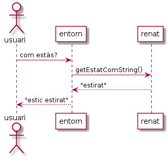

Constructors¶
Coneixerem ara els constructors, un tipus especial de bloc de codi que en programació orientada a objectes és cridat la creació d’una nova instància d’una classe, i que té la funció de preparar la instància per a ser utilitzada.
Aquesta introducció comença amb una secció teòrica que descriu els constructors (i destructors), per després continuar amb l’anàlisi d’exercicis en Java.
Avís
La secció teòrica pot resultar molt complexa per qui mai no ha estat exposat a la gestió explícita de memòria dinàmica. Si és el teu cas, intenta aproximar-te-hi amb ment oberta.
Però si ja els coneixem!¶
En realitat ja hem fet servir els constructors. En el tema Classes i objectes hem vist codi que fa:
1 2 3 4 5 6 7 8 | public class GatRenat {
int vides = 7; // vides disponibles del gat Renat
public static void main(String[] args) {
GatRenat renat; // declarem la referència al gat
renat = new GatRenat(); // creem la instància del gat Renat.
System.out.println("Al gat Renat li queden " + renat.vides + " vides");
}
}
|
A la línia 5 estem creant o construint una instància de GatRenat. Un cop executada, sabem que la referència renat queda inicialitzada a un valor de tipus GatRenat.
D’acord, però… què és el que realment està passant quan cridem al constructor d’una classe?
Constructors i destructors¶
Un aspecte important, pels programes en execució, és la reserva i posterior alliberament de memòria necessària per a poder fer encabir dinàmicament les dades que manipulen.
Considerem per exemple, la implementació d’una llista dinàmica d’enllaç simple, sovint es realitza amb una estructura (Node) que conté almenys dos camps (el valor a guardar per un element de la llista i un apuntador al següent node). Normalment ens cal disposar d’un apuntador al primer node, i el darrer node apunta convenientment a un valor nul.
La següent imatge esquematitza una llista d’aquestes amb dos elements.

En cas que hi vulguem afegir un nou node, ens cal realitzar les següents passes:
- reservar l’espai pel nou node
- inicialitzar els valors del nou node. Com a mínim l’apuntador a següent node, que farem apuntar al node que correspongui de la llista, o bé a null si ha de ser el nou darrer.
- reassignar l’apuntador del node de la llista que ha de ser anterior al nou node, per què tingui com a següent el nou node.
El resultat final queda representat per la següent imatge:

Per una altra banda, quan volem eliminar un element de la llista, les passes que hem de fer són:
- fer que el punter a següent node del node anterior al que volem eliminar, passi a apuntar al node següent del node que volem eliminar.
- alliberar l’espai ocupat pel node a eliminar.
El resultat final queda:

De les operacions vistes en aquest exemple, podem dir que tot node de la llista ha de ser:
- creat: reserva de memòria per a allotjar-lo i inicialització
- destruït: alliberament de la memòria reservada un cop sabem que no ens cal tornar a fer-lo servir.
En Java, la creació d’una nova instància la realitzem mitjançant
l’expressió new «Constructor»(«args») on «Constructor» coincideix
amb el nom de la classe i «args» corresponen als valors
d’inicialització (sovint no hi ha cap).
La destrucció en Java no es realitza explícitament (a diferència d’altres llenguatges OO com ara C++)[2].
Java (com molts altres llenguatges OO) disposen d’un procés de baixa prioritat anomenat recolector d’escombraries (Garbage Collector) que se n’encarrega d’anar alliberant aquells espais de memòria que ja no estan referenciats per ningú. El llenguatge no ens ofereix manera d’influenciar a aquest procés[3].
En tot cas sí podem ajudar al Garbage Collector. Si disposem
d’una instància que ocupa molta memòria i sabem que ja no la
necessitem més al nostre programa, sempre podem assignar totes les
seves referències a null. D’aquesta manera, el Garbage Collector
sabrà de seguida que ja no cal i podrà actuar en conseqüència.
Considera el següent exemple:
1 2 3 4 | // «…»
ClasseGrossa cg = new ClasseGrossa(); // instància que ocupa molt
// «…» // usem la instància tot el que la necessitem
cg = null; // eliminem la referència a la instància
|
Exercici 1. Construcció del gat Renat¶
Considera el següent codi:
1 2 3 4 5 6 7 8 9 10 11 12 13 14 15 16 17 18 19 20 21 22 23 24 25 26 27 28 29 30 31 | public class GatRenat {
private int vides; // vides disponibles del gat Renat
// constructor per defecte
public GatRenat() { vides = 7; }
// constructor específic
public GatRenat(int vides) {
if (vides >= 0) {
this.vides = vides;
} else {
this.vides = 7;
}
}
public int getVides() { return vides; }
// canvia el nombre de vides si el nou valor és vàlid
public void setVides(int vides) {
if (vides >= 0) {
this.vides = vides;
}
}
public static void main(String[] args) {
GatRenat renat = new GatRenat();
System.out.println("Al Renat li queden " + renat.getVides() + " vides");
GatRenat megaRenat = new GatRenat(12);
System.out.println("A Mega Renat li queden " + megaRenat.getVides() + " vides");
}
}
|
Executa el programa i respon a les següents preguntes:
A quina línia es posa el valor de vides de la instància creada a la 26?
A quina línia es posa el valor de vides de la instància creada a la 28?
Els blocs que s’inicien a les línies 5 i 8 semblen mètodes però hi ha algunes diferències amb un mètode convencional. Quines són?
Què et suggereixen els comentaris de les línies 4 i 7?
Quan s’executa el codi dels blocs iniciats a les línies 5 i 8. Ajuda’t, si et cal, de xivatos[1].
Elimina o comenta la línia 5. Continua funcionant el codi? Perquè creus?
Substitueix el codi del bloc de la línia 8 pel següent i descriu què passa a l’hora d’executar:
1 2 3 4 5
// constructor específic public GatRenat(int vides) { this(); setVides(vides); // o també this.setVides(vides); }
Per a què creus que serveix el
this()?Pista: posa un xivato al constructor per defecte i compara que passa en executar el codi quan
this()hi és, i quan el treus.
Exercici 2. El gat Renat pot no néixer estirat¶
Crea una nova versió de la classe GatRenat a partir de com va quedar a l’últim exercici.
En aquesta ocasió, la classe GatRenat permetrà ser inicialitzada tot indicant amb quin estat
(estirat, assegut o dret)
Cal assegurar-se que codi que ja funcionava amb la versió anterior, continuï fent-ho amb aquesta.
Per defecte, el gat Renat naixerà estirat com fins ara, a menys que es faci servir el nou constructor.
Nota
Aquest exercici disposa d’un
test unitari.
Assegura’t que el teu codi passa tots els tests.
Exercici 3. L’entorn operatiu del gat Renat¶
En aquesta ocasió desenvoluparem un programa que oferirà la possibilitat d’interaccionar amb el gat Renat amb una interfície de línia de comandes.
El programa mostrarà com a «prompt» [Renat]:
Les comandes que se li podran donar seran:
com estàs?
aixeca’t
seu
estira’t
adéu
L’entorn no distingirà entre majúscules i minúscules. En cas que no entengui la comanda, l’entorn
contestarà amb el missatge no t'entenc i continuarà demanant noves comandes.
Inicialment el gat Renat tindrà 7 vides i estarà dret.
Quan es demani a l’entorn com està el gat Renat, l’entorn li ho demanarà al gat (fent servir el
mètode GatRenat.getEstatComString()) i mostrarà la resposta que retorni el gat amb el misatge
estic «estat». Per exemple, si el gat respon estirat, la resposta de l’entorn serà estic
estirat. El següent diagrama mostra la seqüència d’intercanvis entre els diferents actors
d’aquesta interacció.

Quan se li digui adéu, respondrà amb adéu i finalitzarà.
Per la resta de comandes, el programa respondrà amb el que respongui el gat.
Per facilitar la prova d’aquest programa, caldrà que respecti algunes condicions addicionals.
Crea una nova classe anomenada EntornOperatiu que ofereixi:
dos constructors. Un constructor per defecte que crearà la seva pròpia instància de
GatRenati un altre d’específic que rebrà la instància deGatRenatamb la que treballarà l’entorn.Atenció: el constructor no farà una còpia de la instància rebuda, sinó que la farà servir directament. Tot i que, en general, aquesta no és una manera recomanable de programar, en aquesta situació concreta ens simplifica molt l’exercici.
En ambdós casos, la instància del gat haurà de respectar els requeriments d’inici ja esmentats.
un mètode anomenat
String processaEntrada(String entrada)que rebrà la comanda d’entrada i retornarà el text que s’haurà de mostrar com a resposta.un mètode anomenat
boolean demanaSortir(String entrada)que retornaràtruequan l’entrada correspongui al text de sortida (en aquest cas adéu.
Crea un mètode main() que creï un EntornOperatiu i llegeixi comandes de l’entrada estàndard,
les processi amb processaEntrada() i mostri el resultat retornat fins que l’usuari demani la
sortida.
Crea un joc de proves que permeti comprovar el funcionament de cadascuna de les opcions. El joc de proves estarà format per dos fitxers, un amb les comandes d’entrada i un amb la sortida esperada.
El d’entrada començarà amb:
com estàs?
seu
«…»
El de sortida començarà amb:
[Renat] estic dret
[Renat] m'assec
[Renat] «…»
Nota: en cas que ens descuidem de finalitzar al fitxer d’entrada amb «adéu», és molt probable que
ens surti un error d’execució del tipus java.lang.NullPointerException. El problema és que la
lectura de l’entrada estàndard ens retorna null en comptes d’un String buit. Caldrà només
continuar quan llegim res que no sigui null. És clar, si arribem a null finalitzarem l’execució però
no ens acomiadarem de l’usuari. Faltaria més!
Nota
Aquest exercici disposa d’un
test unitari.
Assegura’t que el teu codi passa tots els tests.
Exercici 4. La classe Hora¶
Implementa la classe Hora amb les propietats (privades) hora, minut i segon de tipus enter, i els accessors (públics) que assegurin que l’hora és sempre vàlida.
Per defecte, l’hora correspondrà a 0:00:00, però la classe oferirà els mecanismes necessaris per
a inicialitzar una hora amb algun altre valor vàlid. És a dir, oferirà un constructor específic
amb la signatura Hora(int hores, int minuts, int segons) que, en cas de que els valors rebuts no
corresponguin amb una hora vàlida, inicialitzarà l’hora amb el valor per defecte.
Afegeix els següents mètodes:
void incrementa(): fa que l’hora tingui un segon mésvoid incrementa(int): fa que l’hora s’incrementi en el nombre de segons indicatsvoid decrementa(): fa que l’hora tingui un segon menysvoid decrementa(int): fa que l’hora es decrementi en el nombre de segons indicatsint compareTo(Hora): compara amb l’hora indicada i retorna <0 si és menor que la indicada, 0 si són iguals i >0 si és més gran que la indicada.String toString(): retorna un String amb l’hora en format h:mm:ss.
Desenvolupa una funció main() que demani a l’usuari les dades de
tres hores i, fent servir la classe Hora, les mostri ordenades
creixentment.
Notes / pistes
En cas que un constructor específic es trobi amb un o més paràmetres no vàlids, inicialitzarà la instància amb els valors per defecte.
Per escriure el 0 inicial als minuts i segons quan el valor és menor de 10, es pot fer servir el mètode System.out.format()
Per si vas amb el temps molt just:
System.out.format("'%d %02d %05d%n'", 4, 4, 4);
O més compacte:
System.out.format("'%d %1$02d %1$05d%n'", 4);
- Aquest exercici disposa d’un
test unitari. Assegura’t que el teu codi passa tots els tests.
Exercici 5. La classe Persona¶
Implementa la classe Persona amb les propietats nom, cognoms, any de naixement i any de defunció, protegides amb constructors i accessors que respectin les següents regles:
- l’any de naixement haurà de ser sempre un enter positiu més gran o igual a 1 i menor o igual a l’any actual.
- l’any de defunció podrà ser:
- -1 per representar que la persona encara és viva
- un valor superior o igual al de l’any de naixement i menor o igual a l’any actual.
- el nom i cognoms no podrà ser una cadena buida ni null.
- les persones poden ser inicialitzades vives o no.
En cas que un constructor rebi un valor no adequat per a alguna de les seves propietats, la inicialitzarà amb un valor vàlid. En concret,
- Per nom i cognoms, el valor serà la cadena «desconegut».
- Per l’any de naixement, el valor serà l’any actual.
- Per l’any de defunció, el valor serà -1.
El valor -1 en la propietat any de defunció, és una decisió d’implementació de la classe que està
subjecta a canvi. Per aquesta raó, hem d’evitar que l’usuari de la classe hagi de fer servir aquest
valor per, per exemple, corregir l’estat d’una persona que s’havia indicat que estava difunta. Per
oferir la possibilitat de marcar una persona com a viva, la classe Persona oferirà el mètode
setViu(). Tot plegat no és un disseny massa elegant. Entre d’altres coses ens obliga a assignar
l’any de defunció sempre després de l’any de naixement. Gràcies a que ho mantenim privat, podem
plantejar una millora més endavant sense afecta el codi dels nostres usuaris.
La classe Persona oferirà també el mètode estàViva() que indicarà si la persona és o no viva.
També oferirà el mètode getEdat() que retornarà l’edat aproximada de la persona, tenint en
comptes l’any actual si està viva o l’any de defunció si no ho és.
El càlcul de l’edat es realitzarà a partir dels anys i serà, per tant, aproximat (no disposem del mes i el dia).
Per saber l’any actual, podem fer servir el següent codi:
int anyAct = java.time.Year.now().getValue();
O si estem amb una versió de Java anterior a 8:
int anyAct = java.util.Calendar.getInstance().get(java.util.Calendar.YEAR);
Desenvolupa la classe UsaPersona que demani per entrada estàndard les dades d’una persona i si
està viva o no. En cas negatiu, demanarà també l’any de defunció. Atenció: per simplicitat,
UsaPersona no comprovarà la validesa de les dades de persona.
Amb aquestes dades construirà una instància de persona i indicarà:
- si la persona és difunta: l’edat a la que va arribar
- si la persona està encara viva: l’edat actual
Considera els següents jocs de prova:
Prova 1: una persona viva
Fitxer
d'entradaFitxer
de sortidaProva 2: una persona difunta
Fitxer
d'entradaFitxer
de sortida
Modifica els fitxers de sortida de manera que les dates corresponguin a l’any en que estàs realitzant aquest exercici. A continuació fes que el teu programa passi totes dues proves.
Pista
Per fer servir aquests jocs de prova, pots usar l’eina diff de GNU. Per exemple:
$ java UsaPersona < test.UsaPersona.01.in | diff test.UsaPersona.01.out -
Si l’anterior no et dóna cap missatge, és que coincideixen el que generes i el que s’espera.
Notes
| [1] | Un xivato és un missatge, normalment escrit per sortida estàndard, que permet saber que s’ha passat per alguna línia de codi. Es tracta d’una pràctica senzilla i eficaç per realitzar proves de codi quan no es disposa d’un depurador (o no es pot/vol fer servir). Solen ser molt més efectius quan incorporen certa informació de context. Per exemple, trobar-se: per aquí 1
per aquí 2
és molt menys informatiu vistós que un: XXX GatRenat.setVides(-12): entra amb vides inicials 7
XXX GatRenat.setVides(-12): surt amb vides finals 7
|
Exercici 6. Què he aprés dels constructors?¶
Fes un repàs dels continguts d’aquest tema incloent els exercicis anteriors. Indica exercici a exercici què has aprés de nou en fer-lo, o bé quins són els conceptes que introdueix l’exercici, si ja els coneixies anteriorment. Procura ser molt concret. Si et cal, ajuda’t de (nous) exemples.
En el cas que no hagis entès algun dels exercicis… bé, aquest cas no es pot donar ja que, abans de fer aquest exercici t’ajudaràs de les diferents fonts de suport que tens al teu abast (incloent, és clar, consultes al teu docent) per arribar a entendre’l. És a dir, no val dir, que un exercici no l’has entès! Entesos?
Redacta aquest exercici en un document de text pla. Et recomano que facis servir algun format de text de marques com ara reStructuredText o markdown.
| [2] | Si bé els objectes Java disposen del
mètode finalize(), es tracta d’un mètode per especificar accions
de neteja i no per decidir quan una instància ha de ser alliberada. |
| [3] | De fet si que podem fer una crida a
Runtime.getRuntime().gc() o System.gc() què, com diu
l’especificació del mètode, suggereix a la màquina virtual de
Java a dedicar esforços per recuperar la memòria disponible, tot i
que serà cridat de manera automàtica cada cop que la màquina
virtual ho trobi necessari. |
Ref. 20.1.2